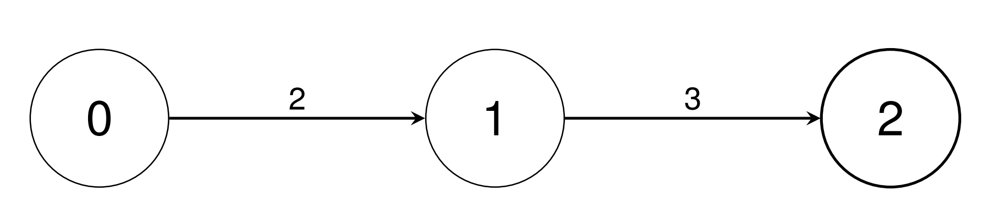

| Category | Difficulty | Likes | Dislikes |
|---|---|---|---|
| Algorithms | Medium | 40 | 19 |
adobe
There are n types of units indexed from 0 to n - 1. You are given a 2D integer array conversions of length n - 1, where conversions[i] = [sourceUniti, targetUniti, conversionFactori]. This indicates that a single unit of type sourceUniti is equivalent to conversionFactori units of type targetUniti.
Return an array baseUnitConversion of length n, where baseUnitConversion[i] is the number of units of type i equivalent to a single unit of type 0. Since the answer may be large, return each baseUnitConversion[i] modulo 109 + 7.
Example 1:
Input: conversions = [[0,1,2],[1,2,3]]
Output: [1,2,6]
Explanation:
conversions[0].conversions[0], then conversions[1].
Example 2:
Input: conversions = [[0,1,2],[0,2,3],[1,3,4],[1,4,5],[2,5,2],[4,6,3],[5,7,4]]
Output: [1,2,3,8,10,6,30,24]
Explanation:
conversions[0].conversions[1].conversions[0], then conversions[2].conversions[0], then conversions[3].conversions[1], then conversions[4].conversions[0], conversions[3], then conversions[5].conversions[1], conversions[4], then conversions[6].
Constraints:
2 <= n <= 105conversions.length == n - 10 <= sourceUniti, targetUniti < n1 <= conversionFactori <= 109